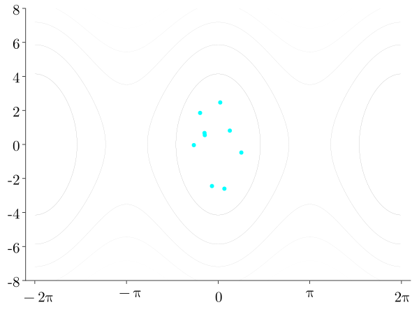
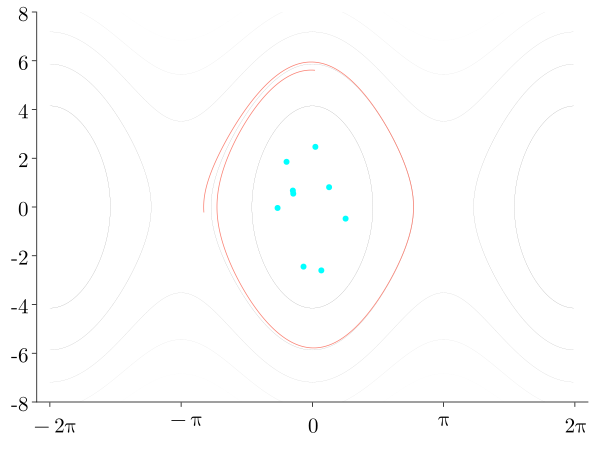
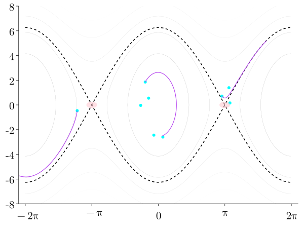

Sabanci University: Rehabilitation Robotics


UT Dallas: Multi-Robot Cooperation and Geometric Control


University of Naples Federico II: PB and Geometric Control

Massachusetts Institute of Technology: Soft Robotics

Boise State University: Robust Data-Driven Control of Robotic Contact


Loosening up: Chess and Basketball

Robustness against Contact under Uncertainty

Robustness against Contact under Uncertainty


Robustness against Contact under Uncertainty
Existing vs. Proposed Control Synthesis Methods
Reinforcement learning (similarly Decision Transformers) 
- Strengths
-
More general
Unknown dynamics OK - Weaknesses
-
Sample complexity
Stability guarantees?
Bayesian Neural Passivity-based Control 
- Strengths
-
Stability guarantees
Closed-form policy
Reasons about model uncertainties
Robustness via Bayesian Learning
System Parameter Uncertainty and Measurement Noise


Our Methods
| NeuralPbc | NeuralIdaPbc |
|---|---|
| \(H_d\) neural net | \(H_d\) quadratic in \(p\) |
| Sample state space | Sample configuration space |
| No stability certificate | Stability certificate |
| More flexible | As applicable as IdaPbc |
Robustness via Bayesian Learning
System Parameter Uncertainty and Measurement Noise
NeuralPbc Loss Function
\[\ell \triangleq \ell_{\text{set}}(\gamma) + \ell_{\bot}(\gamma,u)\]
Transversal Distance Loss \(\ell_{\bot}\)
Measures how close \(\gamma\) is to \(\gamma^\star\) (expert trajectory) using transverse coordinates \(x_\bot\)

- Coordinate transformation
- \(\tau \in \mathbb{R}\) a surrogate for time
- \(x_{\bot} \in \mathbb{R}^{2n-1}\) quantify how far away the current state is from \(\gamma^\star\)
- By construction \(x_{\bot} \to 0 \iff \gamma = \gamma^\star\)
\[\ell_{\bot} = x_\bot^\top Q x_\bot + u^\top R u, \, Q \succeq 0, \, R \succ 0\]
- No preferred orbit? \(Q = 0\)
NeuralPbc Algorithm 📉









Energy-Shaping Pendulum Swing-Up

Energy-Shaping Pendulum Swing-Up
- Deterministic training vs. Bayesian training under parameter uncertainty and measurement noise.
- Measurement noise: \(\epsilon_q = 5 \times 10^4\) rad., \(\epsilon_{\dot{q}} = 5 \times 10^2\) rad/s.
NeuralPbc Experiments
Benchmark underactuated control problems:
- Cart-pole
- Inertia-Wheel Pendulum (IWP)
- Acrobot


Learned storage function

- Observations
- \(H_d^\theta\) has a local minimum at \(x^\star\), control law \(u^\theta\) commands the force in the expected direction
Comparison with Energy Shaping1

NeuralIdaPbc


Simulated IWP experiments


| NeuralPbc | NeuralIdaPbc | IdaPbc |
|---|---|---|
 |
 |
 |
Deterministic vs. Bayesian Training
Performance metric: \(\mathcal{J} = \int_0^T \left( \frac{1}{2}qx(t)^2 + \frac{1}{2}ru(t)^2 \right)dt\).
Simulated dynamics
\[ \begin{aligned} dx &= \begin{bmatrix} \dot{q}_1 \\ \dot{q_2} \\ \frac{1}{I_1}\left(m g l \sin{q_1} - u^\theta - b_1\dot{q}_1\right) \\ \frac{1}{I_2}\left(u^\theta -b_2 \dot{q}_2 \right) \end{bmatrix} dt \\ &+ \nabla_xu^\theta(x) \sigma dW_t. \end{aligned} \]

Deterministic vs. Bayesian Training
- Subtracting rings from the wheel
- decreases wheel mass
- decreases wheel and pendulum inertia
- moves the center of mass


Ball-beam experiments


Robustness via Bayesian Learning
- NeuralPbc assumes a nominal model \(\dot{x} = f_p(x, u)\)
- The trained controller must not overfit on the observations generated from the nominal model
- Our method: \(H_d\) is a Bayesian neural network
- achieves the performance objective for samples \(\theta \sim P(\theta | \mathbb{D})\)
- searches for ensemble of parameters that meet the desired performance \[ P(\theta \mid \mathbb{D}) = \frac{\overbrace{P(\mathbb{D} \mid \theta)}^{\text{likelihood}}\overbrace{P(\theta)}^{\text{prior}}} {\underbrace{\int_\theta P(\mathbb{D} \mid \theta^\prime)P(\theta^\prime) d\theta^\prime}_{\text{evidence}}}. \]
Deterministic vs. Bayesian

- Subtracting rings from the wheel
- decreases wheel mass
- decreases wheel and pendulum inertia
- moves the center of mass

Rimless Wheel

- Performance objective: achieve hip speed \(\dot{x}_c^* = 1\)m/s \[\begin{align*} J_T = \sum_{t=0}^{T} \| \dot{x}_c^* - \dot{x}_c(t; \theta) \| \end{align*}\]
- Uncertainty in elevation under each spoke \[ p_s \sim \mathbb{U}(0 \textrm{cm}, 2\textrm{cm}) \]
Deterministic vs Bayesian

\[\begin{align*} p_s &\sim \mathbb{U}(0, p_{max}) \\ p_{max} &= [0, 0.5, 1, 1.5, 2] \textrm{cm} \\ J_T &= \sum_{t=0}^{T} \| \dot{x}_c^* - \dot{x}_c(t; \theta) \| \end{align*}\]

Current work


Acknowledgments


Infinite-Horizon Best Performance


Optimal Controller


Optimal Controller
- Optimal control parameter a nontrivial function of \(\sigma\) and \(\sigma_p\).
- Bayesian learning strikes the right trade-off.
DiffEqFlux.jl Demo
Learning \(\dot{x} = f(x)\) where \(f\) is a neural network
Regress on MSE between trajectory of \(f\) and data